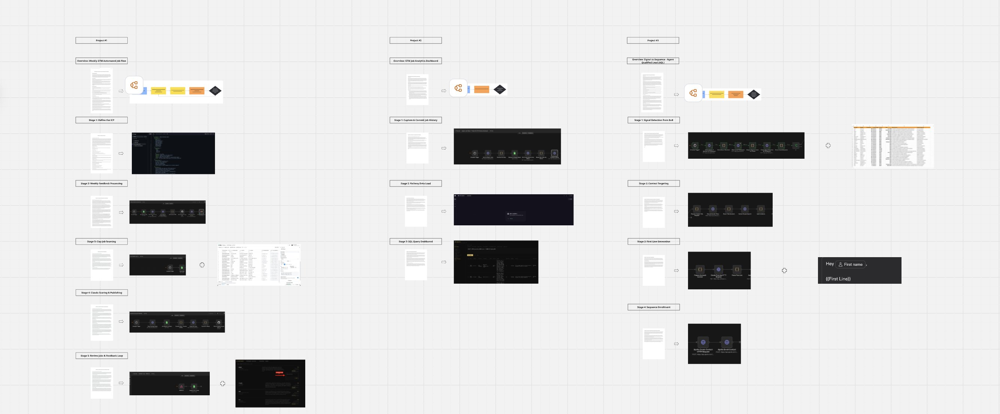

Seven plus years in SaaS, GTM Engineer, and a point of view on how sales and systems should work together in the future of sales.
How I operate inside a company, from the first ninety days through the systems and infrastructure I build once I am in the seat, laid out as sections you can open one at a time.
The first question I am trying to answer when I walk through the door is simple. Why are you winning and why are you losing. Everything else flows from that.
Before a single workflow gets touched I want to understand the product or service at a deep level. Not the pitch deck version. The real version. Why do customers actually buy it. Is this a must have or a nice to have. How sticky is it once it is in the door. How complicated is the education cycle from first conversation to close. Does the ideal customer instantly understand what the product does or does it require a significant amount of explaining before they see the value. Where are deals getting lost in the process and is that a targeting problem, a messaging problem, or a product problem.
I want to understand who has already bought. I spend a significant amount of time going through every closed won deal and asking the same questions. What title did this person hold. Where were they from. What pain were they experiencing before they found us. What made them take a meeting in the first place. What made them introduce the product to their leadership team. What made them sign. That pattern is the ICP and I want to define it with enough precision that there is no margin for error when we go back to market.
I also want to understand the competitive landscape in full. What do competitors have that we do not. What do we have that competitors do not. Can we actually win the deals we are going after or are we showing up to fights we cannot win. Before any message goes to a prospect I want to know how they perceive our brand. Are they confused by the website. Does our positioning instantly click or does it require education. What does a prospect think when they see our name for the first time.
Then I look at the sales team. How are reps getting their leads today. Are they performing too many jobs besides selling. How complicated is their day to day. Are they working out of a single place or are they living across fifteen tabs. What tools are in place and are they actually working together or just sitting next to each other with no real integration. Is every conversation being recorded. Is signaling and intent data being used to find new leads or is everything manual. Who wrote the outreach messaging and is it actually good or is it AI slop that no one would respond to. Is leadership looking at a dashboard that tells them what is actually happening or are they operating on gut feel and anecdote.
I am not building anything in month one. I am embedding myself into every detail of how and why the system is operating the way it is today. That context is what separates a GTM engineer who builds the right thing from one who builds something impressive that nobody uses.
By the end of month one I have enough context to start making decisions. Month two is about turning that context into a foundation.
The ICP gets defined in full. Not a rough sketch. A scored, documented, living definition of exactly who we sell to, why they buy, what signals indicate they are ready, and what disqualifies an account before we waste time on it. This document becomes the north star for every targeting and messaging decision that follows.
The golden list gets built. A tiered, enriched list of the best target accounts in the market built on the ICP definition, layered with intent signals, job change data, firmographic fit, and technographic indicators. This is the first real deliverable and it changes how the sales team operates immediately.
But the golden list is not just a prospecting tool. It is the source of truth that makes everything else possible. Without it a company cannot be nimble. It cannot pivot quickly when the market shifts, respond to a competitor making a move, or run a new experiment with any confidence because there is no clean foundation to run it against. Every tactical decision becomes slower and more expensive because the team is always starting from scratch with incomplete or outdated information.
The list is built to be maintained and iterated on over time because the intelligence that powers it is always evolving. The market moves, signals change, new buying patterns emerge, and the ICP sharpens as more deals are won and lost. A company that keeps that list current and accurate can test a new message, a new vertical, or a new motion and know within weeks whether it is working because the foundation underneath the experiment is solid. A company without it is always guessing, always rebuilding, and always slower than it should be. The golden list is not the first project. It is the infrastructure that makes every other project work.
The full tech stack audit gets completed and documented. Every tool in the stack gets evaluated against one question. Is it doing its job and is it passing clean data to everything else. The audit does not just identify what is broken. It identifies what is possible. What could the system produce if the right infrastructure was in place. That analysis goes to leadership as a formal presentation. This is why your team is performing the way they are. This is what is costing you. This is what it looks like when it is fixed.
Month three is when the building starts. The ICP is defined. The golden list exists. The audit is complete and leadership has seen it. Now the work is connecting everything correctly so the system produces what it is supposed to produce.
The orchestration layer gets built first. The tools need to talk to each other. The CRM needs clean data flowing into it from the enrichment layer. The sequencing platform needs to be pulling from the golden list, not a random export from six months ago. The conversation intelligence tool needs to be feeding the follow-up automation. Every workflow needs to be documented so that when something breaks someone can fix it without it becoming a crisis.
The first sequences go out against the golden list with messaging that was built on what we learned in month one. Not templates. Not AI generated copy that sounds like every other email in the prospect's inbox. Messaging that reflects a genuine understanding of who this person is, what they care about, and why this product is relevant to them right now.
By day 90 the company does not feel the same as it did on day one. The reps know exactly what accounts to work and why those accounts were chosen. The messaging reflects a genuine understanding of the buyer rather than a generic template that could have been written for anyone. The tools are connected and passing clean data to each other so nothing falls through the cracks between systems. Leadership has a dashboard that reflects what is actually happening in the pipeline rather than what someone thinks is happening based on a conversation from last week.
None of this is finished at day 90. The work is never finished. But the mindset has shifted, the momentum is building, and the urgency to keep improving is now embedded in how the team operates every day. That is the real deliverable. Not a completed system but an organization that now knows what good looks like and is moving toward it with intention.
And that momentum does not stay contained to one function. Once the infrastructure is in place and the data is clean, every part of the business that touches the customer starts to operate differently. Marketing, customer success, product. The same foundation that fixes the sales motion ends up being the thing the entire organization builds on top of.
Anyone across the organization can submit a request. Sales, marketing, leadership, customer success. The request goes into a shared queue and gets triaged against the current objectives. If it fits the priority work it gets scheduled into the next sprint. If it does not it gets documented and queued for a future cycle. Nothing gets lost and nothing gets acted on arbitrarily. The queue is visible, the prioritization is transparent, and the reasoning is always tied back to what the business is trying to accomplish this quarter.
The work runs in two week cycles. Each sprint is a set of short term goals that represent smaller steps toward a larger objective. At the start of a sprint the work is scoped, assigned, and committed to. At the end of the sprint the work ships. Not all of it every time, but the commitment to the cycle creates accountability and keeps the team moving in a direction rather than reacting to whatever came in that morning. The sprint structure solves the problem most ops teams face where they are always in reactive mode and never making real progress on the infrastructure that actually matters.
At the end of every sprint release notes go out to the company. Not a long document. A concise summary of what was built, what changed, and what it means for the teams that use it. The purpose of release notes is not just documentation. It is accountability and visibility. The rest of the company can see what the GTM engineering team is working on and whether that work is moving the needle. Shared information sparks ideas. Something that was built to solve a sales problem might be exactly what the customer success team needed to solve a completely different problem. Release notes create that connection and they demonstrate in plain language how the work is impacting the business.
Building something and shipping it is only half the job. The other half is knowing whether anyone is actually using it. Most ops teams skip this part entirely and end up with a graveyard of tools that nobody touches. I watch behavior. If a follow up email gets drafted automatically by the system and the rep never sends it that is a signal the workflow is not landing the way it should. If sequence reply rates go up after a new campaign launches that is a signal the targeting or messaging improvement worked. If reps are still manually updating fields that the system should be updating for them that is a signal the automation is broken or was never adopted. CRM activity, sequence engagement, output utilization, and rep behavior are all data points that tell the real story of whether the system is working. The goal is not just that the tool exists. The goal is that the team operates differently because of it.
There are three places the GTM engineering function tends to live depending on the company. The first is under the CRO or through RevOps, sitting at the center of the go to market organization with visibility across sales, marketing, and post-sales. The second is inside the CMO organization, living next to marketing ops and focused primarily on top of funnel automation and campaign infrastructure. The third is under a business systems team within the CIO or CTO organization, where the function is treated more like technical infrastructure and sits closest to the data and systems layer of the company.
Each of these structures makes sense in a specific context. A company with a heavy product led motion and large data volumes might need the GTM engineer closer to the data team. A company that is primarily marketing driven might benefit from having the function inside the CMO org. But for a growth stage company with a sales led motion and a team that is still figuring out its go to market, there is really only one structure that works.
The GTM engineer needs to be close enough to leadership to understand where the business is going and close enough to the sales team to know what is actually happening on the ground. Those two inputs together are what determine whether the work being built is actually the right work.
The person steering go to market strategy, whether that is a CRO, a VP of Sales, or the CEO at an early stage company, is making decisions about which verticals to prioritize, how to adapt the ICP as the market evolves, and which new channels are worth investing in. The GTM engineer needs that context to build the right things. Without it you are building infrastructure for a direction the company is no longer heading in.
The person who owns the sales team day to day is the cultural feedback loop. They know which tools the reps are actually using and which ones they ignore. They know what is creating friction and what the team actually needs versus what looks good in a planning document. That candid ground level feedback is what keeps the work grounded in reality rather than theory.
In practice this means the GTM engineer should sit close to revenue leadership with a strong and direct working relationship with the sales team. The formal reporting line matters less than having genuine access to both levels of input. Strategy from the top. Ground truth from the field. The GTM engineer builds at the intersection of both.
This is not a behind the scenes role. The work is hands on and the relationship with the sales team is direct and continuous.
The goal is to enable reps to be genuinely better at their jobs, not just give them more tools to manage. That means being present with the team. Running internal sessions to show reps how new workflows and automations work in practice. Teaching new habits that make the day to day more efficient rather than more complicated. Taking real time feedback on what is working and what is not and acting on it quickly rather than waiting for a quarterly review.
The sales team is not a customer of the GTM engineer. They are a collaborator. The best ideas for what to build next almost always come from a conversation with a rep who is hitting the same friction point every single day. The GTM engineer's job is to be close enough to the team to hear those conversations and build fast enough to do something about them.
When the GTM engineer reports to the wrong person the work gets disconnected from the people it is supposed to serve. If they report too far into a technical or finance adjacent structure they end up solving data problems that nobody in sales asked for. If they report to someone without visibility into the go to market strategy they end up building tactically without understanding where the business is heading. In either case the output becomes something that looks productive on paper but does not actually change how the sales team operates.
The reporting structure is not an administrative detail. It is what determines whether the GTM engineer has the access, the context, and the trust to do the work that actually matters.
Pipeline management and source of truth. Every contact, every account, every deal, and every activity lives here. If the data in the CRM is bad everything downstream produces bad outcomes.
This is where the golden list gets built. Without strong enrichment infrastructure you are building on bad data from the start.
The orchestration layer is what makes all the other tools work together instead of in isolation. This is where most of the GTM engineering work actually happens.
Email sequencing, LinkedIn automation, connection requests, InMail, and profile-based workflows all live here. The sequencing tool is only as good as the list and messaging it is working from. Garbage in, garbage out.
Every customer conversation contains signal. This data feeds follow-up automation, informs messaging improvements, and gives leadership visibility into what is actually happening on calls.
Intent data tells you which accounts are actively showing signs of buying behavior right now so the sales team is always focused on the accounts most likely to convert.
Identifies anonymous website visitors and routes them into GTM workflows. When someone visits the pricing page the system knows who they are and triggers the right action.
How prospects and customers book time with reps. Routing logic, round robin assignment, and no-show automation all live here and are often overlooked as a leverage point in the GTM stack.
The goal is to get the rep from raw information to a polished customer-ready asset in minutes rather than hours.
If you cannot measure it you cannot improve it and if leadership cannot see it they are making decisions without data.
Not every early stage company needs a data warehouse but understanding when you do is part of building the right infrastructure.
The goal is to surface everything the rep needs in one place at the right moment. The future of this category is a single pane of glass that automation orchestrates in the background while the rep focuses on selling.
The GTM engineer needs a system to manage their own work with the same rigor they bring to the sales team's infrastructure. Tickets get filed, sprints get planned, release notes get published, and OKRs get tracked. Without this layer the work becomes reactive and nothing compounds.
The golden list is a scored, tiered, living list of the best target accounts for your business with the right contacts already identified, graded by fit, and maintained continuously as the market moves. Every account on it has a documented reason for being there. Accounts are segmented into tiers based on fit and contacts are graded based on how well they match the actual buyer profile for your specific product. Getting that grading criteria right requires a deep understanding of who has already bought from you and why, which is why building the golden list always starts with going back through every closed won deal and finding the pattern.
A VP of Sales calls you the night before a major industry conference and needs a list of every target account attending, the right contact at each one, and enough context to have a real conversation when they walk into the room. If it takes until morning you missed the window. If you have built the golden list correctly you run a query against your scored accounts, filter by the accounts most likely to be at that event based on industry and geography, pull the grade A and B contacts, and you have the list ready in minutes with the context already attached. That is the test. The golden list is not just a prospecting tool. It is what allows the business to move at the speed the market requires.
The golden list is maintained continuously because the market never stops moving. Companies hit funding milestones that push them into your ICP. Decision makers change roles. New signals emerge that shift which accounts should be the highest priority right now. A company that keeps their list current can pivot quickly when the market shifts, run new experiments with a clean foundation, and respond to competitive moves without rebuilding everything from scratch. A company without it is always starting over, always slower, and always leaving pipeline on the table.
It starts with defining the ICP with enough precision that there is no margin for error. Not a rough sketch of who the product is for but a documented definition of exactly who buys, why they buy, what signals indicate they are ready, and what disqualifies an account before time gets wasted on it. From there a large universe of accounts gets pulled and layered with intent signals, job change data, firmographic fit, and technographic indicators. Accounts get scored and tiered. Contacts get graded. The output is a list the sales team can act on immediately with confidence that they are spending their time on the right people. The list then gets maintained on an ongoing basis so it compounds in value over time rather than decaying like every static list eventually does.
The golden list is not a deliverable. It is the infrastructure that makes every other part of the go to market motion work and it is the first thing I build at any new company.
A short series breaking down what GTM engineering is, why it matters, and how I build the systems that make revenue teams more effective.
The motion is active and pipeline is being built across all three channels. The infrastructure is live.
A running log of GTM engineering builds. Each project is a real system built that is actively published.
